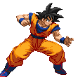

-
goku #001
- saiyajin
Goku é um Saiyajin originalmente enviado à Terra quando criança com a missão de destruí-la,mas quando chegou na terra bateu a cabeça e perdeu o instinto da raça saiyajin e agora protege a terra de inimigos que ameaçam destruir ela.
-
gohan #002
- saiyajin hibrido
Gohan é filho do protagonista Goku com sua esposa Chi-Chi e o primeiro híbrido entre humano e Saiyajin mostrado na série,que agora faz parte dos guerreiros z.
-
piccolo #003

- Namekuseijin
piccolo qundo nasceu so tinha um objetivo,matar goku pois o goku matou seu pai, ao decorrer da historia piccolo deixa de lado a sua vingança assim virando um dos guerreiros z.
-
goku black #004

- shinjin
Goku Black, também conhecido como Black, é um ser maligno que aparece na linha do tempo de Trunks do Futuro. A verdadeira identidade de Black é de um Zamasu de uma linha do tempo alternativa, que usou as Super Esferas do Dragão para trocar de corpos com Goku, e após a troca, matou Goku.
-
cell perfeito #005
- androide
Ele é a final criação de Dr. Gero, designado para ter todas as habilidades dos melhores lutadores que já habitaram ou visitaram a Terra; o resultado é um “guerreiro perfeito”, que possui numerosos traços genéticos e habilidades especiais
-
super buu #006

- Majin
Super Buu é o resultado da absorção de Gotenks e Piccolo por Majin Buu. Ele é mais forte e tem uma capacidade mental maior do que a encarnação anterior.